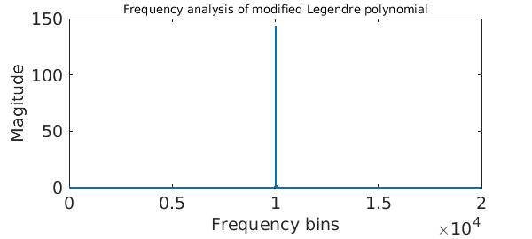
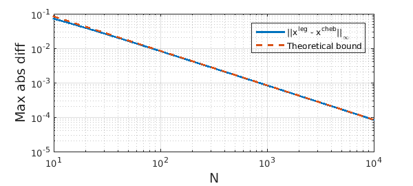

The forward transform
The discrete (or finite) Legendre transform (DLT) evaluates a Legendre series expansion at Legendre nodes on $[-1,1]$, i.e.,
$$ f(x_k^{leg}) = \sum_{n=0}^{N-1} c_n^{leg} P_n( x_k^{leg} ), \qquad 0\leq k\leq N-1.$$
This is an awkward task because the Legendre nodes are non-uniform and the Legendre polynomials have no explicit closed-form expression. Therefore, FFT-based algorithms do not immediately apply, and until recently, the transform required $O(N^2)$ operations. (See [3] for one of the earliest fast DLT algorithms.)
In [2] we describe an algorithm to compute the transform in $O(N(\log N)^2/\log\log N)$ operations, which is implemented in the command legcoeffs2legvals in Chebfun, which is part of a suite of 12 codes with hopefully self-explanatory names legcoeffs2chebcoeffs, chebcoeffs2legvals, etc. (The actual implementation of legcoeffs2legvals is in chebfun.dlt, which the user can also call if preferred.) This allows us to compute the transform when $N$ is 10000 or 100000, or a million. Here it is in action:
FS = 'FontSize'; LW = 'LineWidth'; c = randn( 1e4, 1); tic, legcoeffs2legvals( c ); toc
Elapsed time is 0.529474 seconds.
The transform computed above is still based on the FFT, but with a handful of tricks and approximations to make it applicable to the DLT. Two main facts are exploited.
A Legendre polynomial can be related to a cosine
An asymptotic expansion of a Legendre polynomial of high degree shows that $P_n$ is not too far away from a cosine (after a change of variables and scaling). The precise statement is, as $n\rightarrow\infty$,
$$ \sqrt{\sin(\theta)}P_n(\cos(\theta)) \sim \cos( (n+1/2)\theta + (n-1/4)\pi ). $$
A signal processing engineer would verify this as follows:
P = legpoly(1e4); % Legendre polynomial
theta = linspace(0, 2*pi, 4e4); % time samples
modifiedSignal = sqrt(sin(theta)).*P(cos(theta)); % modify signal
modes = abs( fft( modifiedSignal ) ); % amplitude
plot( modes(1:2e4), LW, 2 ), % freq-domain plot
xlabel('Frequency bins', FS, 14)
ylabel('Magitude', FS, 14)
title('Frequency analysis of modified Legendre polynomial', FS, 10)
set(gca, FS, 14)

The engineer would go on to say that since only a handful of modes near 1e4 are excited, the signal $\sqrt{\sin(\theta)}P_n(\cos(\theta))$ can be well-approximated by a handful of sinusoidal waves.
Legendre nodes are nearly uniform on the unit circle
Another fact is that Legendre nodes are well-approximated by Chebyshev nodes (Chebyshev points of the first kind), as we can see below:
NN = floor(logspace(1, 4, 50));
for N = NN
t_leg = acos(legpts( N ));
t_cheb = acos(chebpts( N, 1));
maxDiff(N) = norm( t_leg - t_cheb, inf );
end
loglog( NN, maxDiff(NN), '-', LW, 2 ), hold on
loglog( NN, 0.83845./NN, '--', LW, 2); hold off
legend('||x^{leg} - x^{cheb}||_\infty', 'Theoretical bound')
xlabel('N', FS, 14), ylabel('Max abs diff', FS, 14), grid on

These two facts mean that the DLT can be carefully related to a handful of discrete cosine transforms, allowing it be calculated via the FFT, requiring $O(N(\log N)^2/\log\log N)$ operations. The odd-looking complexity comes about because of a balancing of computational costs, see [1].
The inverse transform
The inverse discrete Legendre transform legvals2legcoeffs takes samples of a function from Legendre nodes and computes the associated Legendre expansion coefficients. (The implementation happens in the code cheb.idlt.)
f = chebfun( @(x) 1./(1 + 10000*x.^2) ); c_leg = legcoeffs(f); tic, f_leg = legcoeffs2legvals( c_leg ); toc backToTheCoeffs = legvals2legcoeffs( f_leg ); norm( backToTheCoeffs - c_leg, inf )
Elapsed time is 0.182945 seconds.
ans =
1.961426270485212e-13
The IDLT can be related to a (transposed) DLT by a discrete orthogonality relation. It has the same $O(N(\log N)^2/\log\log N)$ complexity.
DLT and IDLT complete the Chebyshev--Legendre cycle: (In the diagram below we give the Chebfun commands that compute each particular transform.)
-->-->-- coeffs2vals() -->-->--
CHEBCOEFFS --<--<-- vals2coeffs() --<--<-- CHEBVALUES
^ |
| |
| v
cheb2leg()
leg2cheb()
| |
| |
LEGCOEFFS -->-->-- dlt() -->-->-- LEGVALUES
--<--<-- idlt() --<--<--
One can now move freely between Chebyshev and Legendre modes and values with fast algorithms in Chebfun. Hooray!
References
-
N. Hale and A. Townsend, A fast, simple, and stable Chebyshev--Legendre transform using an asymptotic formula, SIAM J. Sci. Comput., 36 (2014), A148--A167.
-
N. Hale and A. Townsend, A fast FFT-based discrete Legendre transform, in preparation.
-
D. Potts, Fast algorithms for discrete polynomial transforms on arbitrary grids, Lin. Alg. and Applics., 336 (2003), 353--370.